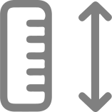

<ion-content>
  <div class="box" style="justify-content: start;">
      <app-progress-h1 [progress]="progress" [h1]="'Sobre seu corpo'" style="width: 352px;"></app-progress-h1>

      <div class="box box__internal">
        <div class="rectangular-box">
          <div class="img">
            
          </div>
          <div class="ion-input">
            <ion-label>Seu peso</ion-label>
            <div style="display: flex;align-items: center;">
              <input 
                #pesoInput 
                [(ngModel)]="peso" 
                id="peso" 
                type="text"
                enterkeyhint="next"
                (keyup.enter)="focusAltura()" 
                mask="000"
                placeholder="000"/>             
              <h1>KG</h1>
            </div>
          </div>
        </div>

        <div class="rectangular-box">
          <div class="img">
            
          </div>          
          <div class="ion-input">
            <ion-label>sua altura</ion-label>
            <div style="display: flex;align-items: center;">
              <input #alturaInput [(ngModel)]="altura" id="altura" type="text" mask="000" placeholder="000" (keyup.enter)="proximo()">
              <h1>CM</h1>
            </div>

          </div>
        </div>
      </div>

      <ion-button (click)="proximo()">Continuar</ion-button>
  </div>

  <app-generic-modal
  [isOpen]="showModal"
  (didDismiss)="showModal = false"
  [width]="'90%'"
  [height]="'50%'"
  [content]="modalTpl"
></app-generic-modal>

<ng-template #modalTpl>
  <ion-header>
    <ion-toolbar>
      <ion-title>Sugerimos um objetivo para voce!</ion-title>
    </ion-toolbar>
  </ion-header>
  <ion-content class="ion-padding">
    <ion-button expand="block" (click)="applySuggestion()">
      {{ suggestion }}
    </ion-button>
    <ion-button expand="block" (click)="applyCustom()">
      Escolher outro
    </ion-button>
  </ion-content>
</ng-template>
  
</ion-content>